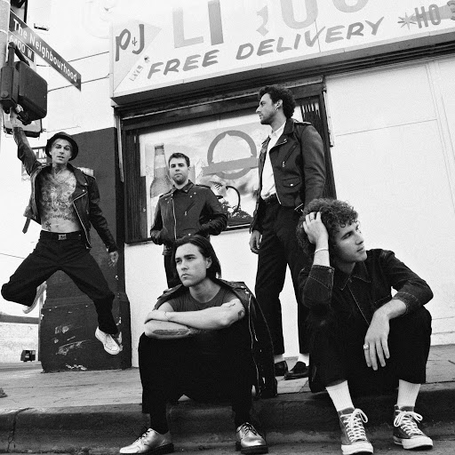
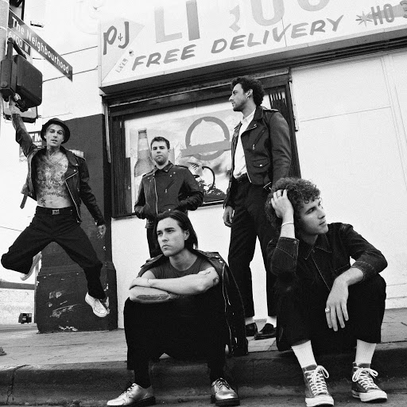

This is my About Me Page!
Home Page
About Me
Music Genres
My Current Favorites
I like all types of music. Im always open to new songs and artist.
Some of my favorite artist are Sza, Frank Ocean, Megan Thee Stallion, The Neighbourhood, Umi and many others.
 


I believe music is truly helpful and overall one of the best things we have. There is just so many different genres and artist who can appeal to anyone with certain music taste. Music has helped me personally and it's one of the things that make me happy.
As this is made to just show different generes. I'm avaliable if anyone would like to make a recommendation.
Such as a song, or genre even new songs that don't seem to be similar.
You can contact me on instagram